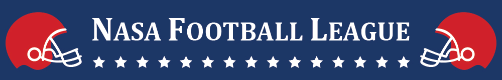

Home
/
About
/
Resources
/
Campaigns
/
The Daily Lead


RULES & ROUNDS:
PRIZES:

Across H2, principal teams compete to play in the OAB Super Bowl, gaining yards on the field by earning OAB visits from 2016 leads. Each month, the highest scoring principal team from each pod claims one of 4 slots in the following month. See official rules below so you know exactly how to play the game!
July: The Tryouts
This is the qualifying round. Throughout July, Principal teams within each pod compete against one another to earn the most OAB visits. At the end of July, one Principal team from each pod will move forward to compete in the first wild card round.August - November: The Wildcard Rounds
Each Wildcard month, four Principal teams (one from each GM pod) compete against one another for OAB visits in that month. At the end of the month, the highest scoring team of the four automatically moves onto the next round. However, if a Principal team "on the bench" has outperformed the Principal team from their GM pod that month, they will replace that team and represent the pod in the next round. At the start of each Wildcard round, all scores reset to zero.December: The Super Bowl
The four Principal teams who have earned slots in the December round compete in the Super Bowl! At the end of December, the team in the Super Bowl with the highest cumulative visit number for H2 wins the grand prize.The Sponsorship Deal
At the end of H2, the Principal team with the highest average player salary, a.k.a. highest $/lead average, wins major OAB sponsorship for a team event during January in-days (includes teams across the entire league, not just in the Super Bowl).
1. A team event sponsored by OAB
2. A first round pick from the NFL prize vault for each individual on the team
1. A team event sponsored by OAB
2. A second round pick from the NFL prize vault for each individual on the team